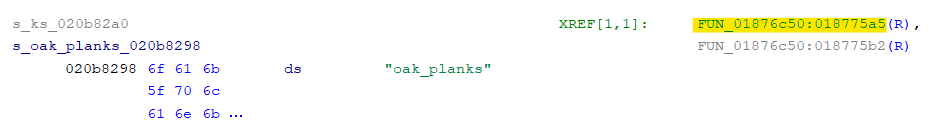
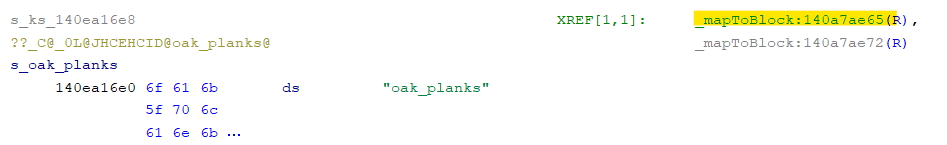

1 - Introduction
⭐ Starring the github repository would be highly appreciated, and would help me know the level of interest towards this guide. Best of luck!
This guide assumes that you have existing programming experience with c++. If this sounds overwhelming and you still want to follow along, you could watch some introductory videos in a YouTube Playlist by Cherno on C++
As a disclaimer, modding bedrock is hard, especially if you have no experience in reverse engineering, but don't let that put you down trying. It can be helpful to see many concepts in modding as a "black box", meaning that you have enough knowledge to use them, but without understanding exactly why it works. You can always come back later at a point where you are more used to the concepts to grasp why it works if you want a more deep understanding.
1.1 - Required tools
TODO: Rewrite this..
2 - First Project
This chapter will lead you through the basics of
"Hooking"functions in ZenovaAPI by creating your own custom item. Please keep in mind that this chapter is significantly easier then later sections, since the headers have already been created for you. Be prepared for a difficultly increase later on.
Quick Project Setup
Open up a powershell instance in the folder in which you want your project folder to be in. Hover over the top right side of the commands below and click Copy to Clipboard and paste it into Powershell (not CMD). This will setup your entire project ready to complete the following chapters.
git clone https://github.com/FrederoxDev/Modding-Guide-Template
cd Modding-Guide-Template
Remove-Item -Recurse -Force .git
git init
git submodule add https://github.com/FrederoxDev/Bedrock-Headers
$Path = "./resources/assets/manifest.json"
(Get-Content $Path).replace("uuid1", (New-Guid)) | Set-Content $Path
(Get-Content $Path).replace("uuid2", (New-Guid)) | Set-Content $Path
cmake . -Bbuild
start build/Example.sln
Configuring Settings
-
In Visual studio change
ReleasetoRelWithDebInfo
-
Next go to the top menubar, and press
Build Solutionunder theBuildtab, or use the shortcut Ctrl + Shift + B
-
Launch
ZenovaLauncher(reload if it is already open), and open the settings menu by clicking on the button in the bottom left, and copy the following settings
-
Go to the
profilestab and configure version1.14.60.5by pressing the 3 dots on the right side. Finally addTemplate Nameto the list of loaded mods

Building the Project
Whenever you make changes to your project you will need to rebuild the solution with Ctrl + Shift + B, or by pressing Build Solution. To build the project you need to close all open instances of Minecraft. Simply then launch the game through ZenovaLauncher on your 1.14.60.5 profile.
-
Next you will be prompted to attach a debugger, make sure that your instance of
Visual Studiois selected and pressOK.
- You will run into two breakpoints in Visual Studio, simply press the
Continuebutton. One is from Minecraft and the other one is from ZenovaAPI.
-
You may run into an error while the game loads, that looks like this. If you get it simply uncheck
Break when this exception type is thrownas this is not an issue caused by Zenova or your mods, and it can be ignored. Unchecking it will disable this error from pausing the game again. Then simply press theContinuebutton.
- If this is the first time building the project, the example mod should print a simple
"Hello World"into the console[Info] [ModStart] Hello World!
2.1 - Intro to Hooking
To begin creating code to interact with Minecraft, a concept called
Hookingcan be used. Hooking allows code to be injected before or after existing functions, as well as being able to get the parameters passed to the function, and modify what is passed to the actual function.
Hooks in Zenova
First of all, ZenovaAPI provides two types of Hooks:
Zenova_Hook- used to hook static and member functionsZenova_VHook- used to hook virtual functions
To begin this guide will show you how to modify the behaviour of hovering over items. Firstly add an include to the item header as shown below:
#include "Minecraft/Items/Item.h"
Tip: You can open up the header file by holding down Ctrl and clicking on the file path. Inside you can see all of the virtual functions that are used by the Item class. Specifically to modify the behaviour for hovering over items, you would hook
appendFormattedHovertext.
Navigate to appendFormattedHoverText in Minecraft/Items/Item.h
virtual void appendFormattedHovertext(const ItemStackBase&, Level&, std::string&, const bool) const;
Defining a hook
- Firstly a "trampoline" is needed, a trampoline is a function containing a copy of the original functions code. As
appendFormattedHoverTextis avirtualfunction, the first parameter passed will be a pointer to the class, in this caseItem. Next it needs to take in all of the arguments of the original function.
inline static void (*_appendFormattedHoverText)(Item*, const ItemStackBase&, Level&, std::string&, const bool);
- To make the hook, firstly copy the parameters of your trampoline, next you will need to give each argument an identifier. In this hook it is calling the "trampoline" function, but it is also printing
"Hook called!"into the console.
static void appendFormattedHoverText(Item* item, const ItemStackBase& itemBase, Level& level, std::string& hoverText, const bool showCategory)
{
// Call the original piece of code so it still behaves like normal
_appendFormattedHoverText(item, itemBase, level, hoverText, showCategory);
// Print to console to test if it is working
Zenova_Info("Hook called!");
}
- Next you need to tell ZenovaAPI to hook the function using
Zenova_VHook. To test it, build the project and hover over any items in your inventory, the hovering should still work with normal behaviour, but it will also be flooding the console with messages!
MOD_FUNCTION void ModStart()
{
Zenova_VHook(Item, appendFormattedHoverText, &appendFormattedHoverText, &_appendFormattedHoverText);
}
- Calling the trampoline is not actually mandatory, here it has been removed and the hoverText has been set to a constant value of
"Hello World!"
static void appendFormattedHoverText(Item* item, const ItemStackBase& itemBase, Level& level, std::string& hoverText, const bool showCategory)
{
hoverText = "Hello World!";
}

2.2 - Registering Items
Firstly replace your code in src/Example.cpp with this, as it will be build upon throughout this page.
#include "Zenova.h"
#include "generated/initcpp.h"
#include "Minecraft/Items/VanillaItems.h"
#include "Minecraft/Items/Item.h"
#include "Minecraft/Items/ItemRegistry.h"
MOD_FUNCTION void ModStart() {}
VanillaItems::registerItems
- When registering an item, you will need to hook into the
VanillaItems::registerItemsfunction. Navigate toregisterItemsinMinecraft/Items/VanillaItems.h
static void registerItems(bool);
- Next as this is a static function, the hook and trampoline only need to have the parameters from
registerItems, unline VHook which also took the class as a pointer. Try to define them yourself first, and then compare against the example
// Hover and select the eye to reveal the solution
inline static void (*_registerItems)(bool);
static void registerItems(bool flag)
{
// Call the trampoline so that minecraft can register its own items first
_registerItems(flag);
// Print to console to see when it is called
Zenova_Info("registerItems");
}
- Add the hook to your
ModStartfunction. Try to do this yourself and then reveal the hidden code. After this, build your project and open a world, it will show thatregisterItemsis only called during the world load, and not when the game is opened.
// Hover and select the eye to reveal the solution
MOD_FUNCTION void ModStart()
{
Zenova_Hook(VanillaItems::registerItems, ®isterItems, &_registerItems);
}
- Now modify your hook for
registerItems, to register an individual item you can useItemRegistry::registerItemafter calling the trampoline function.registerItemtakes in a generic type, for now use theItemclass. Additionally it takes in aconst std::string&for the identifier of the item and also ashortfor the item number id.
static void registerItems(bool flag)
{
_registerItems(flag);
ItemRegistry::registerItem<Item>("guide:test_item", ItemRegistry::getMaxItemID());
}
- Build the project and open a world, open the chat and run
/give @s guide:test_item. The item should show up in the list however it will not have an icon yet

2.3 - Item Icons
- Firstly create a hook for
VanillaItems::initClientData. This is where items need to register their icons.
inline static void (*_initClientData)();
static void initClientData()
{
_initClientData();
}
MOD_FUNCTION void ModStart()
{
Zenova_Hook(VanillaItems::registerItems, ®isterItems, &_registerItems);
Zenova_Hook(VanillaItems::initClientData, &initClientData, &_initClientData);
}
- If you look through the
Itemclass header, you will find two virtual functions which are calledsetIcon, this is the function needed to set the icon. As thesetIconfunction needs to be called inside of theinitClientDatahook, there needs to be a way to reference the item to call that function on. Hover over theItemRegistry::registerItemfunction, and you will see it returns aWeakPtr<Item>. Firstly define a new variable insrc/Example.cppand modify the line where the item is registered to assigntestItemto the returned value.
inline static WeakPtr<Item> testItem;
static void registerItems(bool flag)
{
_registerItems(flag);
testItem = ItemRegistry::registerItem<Item>("guide:test_item", ItemRegistry::getMaxItemID());
}
- Now inside of the
initClientDatahook, use the arrow operator->to call the member functionsetIconontestItem. The function takes in the texture identifier, in this case"diamond"and also the frame, in this case pass0
static void initClientData()
{
_initClientData();
testItem->setIcon("diamond", 0);
}
Creating an Icon
- Next inside of
resources/assets/textures/item_textures.jsoncreate a new object in"texture_data"called"guide:test_item", this will be the identifier for your icon. Inside of that object create a key,"textures"with the value"textures/items/test_item"which is the path to the texture for the icon.
{
"resource_pack_name": "resourcePack.addon.name",
"texture_name": "atlas.items",
"texture_data": {
"guide:test_item": {
"textures": "textures/items/test_item"
}
}
}
- Next inside of
resources/assets/textures/items/place any16x16pixel texture with the nametest_item.png. Now in your hook forinitClientDatainsrc/Example.cpp, replace the identifier"diamond"to"guide:test_item"
static void initClientData()
{
_initClientData();
testItem->setIcon("guide:test_item", 0);
}
Item Name
- Inside of
resources/assets/texts/en_US.langadd a line, which minecraft will use for your Items name.
item.guide:test_item.name=Test Item
2.4 - Overriding functions
On page 2.2, this guide showed you how to replace a virtual function for all Items using Hooks. But how could this be achieved for an individual custom item? To do this you can create a class which inherits from the Item class, firstly create a new class in src/Example.cpp called TestItem and declare a public constructor which calls the Item constructor.
class TestItem : public Item {
public:
TestItem(const std::string& name, short id) : Item(name, id) {}
};
To override a virtual function in c++ simply create a function with the same parameters and name inside of the TestItem class. Like on page 2.2, this page will show you how to replace the functionality for hovering over the item by replacing it with a constant value of "Hello World!".
class TestItem : public Item {
public:
TestItem(const std::string& name, short id) : Item(name, id) {}
virtual void appendFormattedHovertext(const ItemStackBase&, Level&, std::string& hoverText, const bool) const
{
hoverText = "Hello World!";
};
};
In your constructor for the TestItem class you could also call other functions, for example if you wanted to set the stack size you could call setMaxStackSize:
class TestItem : public Item {
public:
TestItem(const std::string& name, short id) : Item(name, id) {
setMaxStackSize(1);
}
virtual void appendFormattedHovertext(const ItemStackBase&, Level&, std::string& hoverText, const bool) const
{
hoverText = "Hello World!";
};
};
3 - Writing Headers
Writing headers will be a difficult topic as it is very different to programming. The end goal is to replicate the headers of Minecraft with the right size and order so that it is represented in Memory the same.
Pre-requisites
- You will need to get the
Windows Server (1.14.60.5)and theLinux Server (1.14.60.5), you can download an archived version from the Minecraft Fandom page.
- Next you will need to get the
Windows Client (1.14.60.5), however you will already have this installed though ZenovaLauncher if you have followed through the guide. To find it press Win + R and enter%zenova_data%/versions/Minecraft-1.14.60.5/
- Lastly you will need the
Mac Education Client (1.14.70), this guide will not tell you how you can get this version. It is important that you get version1.14.70, as it contains a DWARF information. Make sure to unzip the.dmgfile to a folder before analysing, or else you will not be able to find the right file.
Analysing in Ghidra
Analysing the files in Ghidra will take a long time, on an i3-1005G1 CPU, it took roughly 6 hours to analyse each version. Although you only will need to analyse 3 of the 4 versions, as you do not need to analyse the Linux Server. Follow the next steps for one version at a time.
- Open Ghidra and select
File > New Project, next selectNon-Shared Projectand enter an clearly labeled name for the version you are analysing.
- Next press I and locate the file for your version
- Windows Server -
bedrock_server.exe - Windows Client -
Minecraft.Windows.exe - Mac Edu Client -
minecraftpe
- Windows Server -
- After you have imported the right file, double click it in the
Active Projecttab to open it in theCodeBrowser. It will then prompt you toAuto-Analysethe file, pressOKand leave the default settings and confirm again. Close any open ghidra windows by pressing the black X in the top right corner, this will decrease the amount of work that Ghidra has to do.
- Leave it to analyse, once done make sure to save the project with Ctrl + S so that you will not have to analyse it again.
FrederoxDev/Bedrock-GhidraScripts
To try and automate as much as possible, scripts have been written which can automatically generate the large majority of the header files. To install them run the following commands in PowerShell (Not CMD)
cd "$env:USERPROFILE\ghidra_scripts"
git clone https://github.com/FrederoxDev/Bedrock-GhidraScripts.git .
3.1 - Intro to Symbol Maps
When writing code which interacts with Minecraft, ZenovaAPI needs to know where the code is in memory to be able to call it. To provide these adresses Zenova uses Symbol Maps, which are just made from .json files. Here is the schema for a Symbol Map in TS
type Address = string; // e.g. '0x123456'
type MangledSymbol = string; // e.g. '?exampleSymbol@..'
type HeaderFilePath = string; // e.g. 'Minecraft/Items/Item.h'
type ClassName = string; // e.g. 'Item'
type VariableString = string; // e.g. 'bool& Item::mInCreativeGroup'
interface SymbolMap {
includes?: HeaderFilePath[],
functions?: Function[],
vtable?: VTable[],
variables?: Variable[]
};
interface Function {
name: MangledSymbol,
address: Address
};
interface VTable {
name: ClassName,
parent?: ClassName | ClassName[],
address: Address | Address[],
functions: MangledSymbol[]
};
interface Variable {
[key: VariableString]: Address
};
3.2 - Function Declarations
Extracting Vtable Order
-
To get started, locate the class you want to generate a header for inside of the
Mac Education Clientin theSymbolTreewindow and select thevtable.
-
Next locate the first function address in the Vtable, and copy it to a notepad file. The image below shows the first address highlighted in yellow (
1035d5d90)
-
Next locate the last function address in the Vtable by scrolling downwards and again copy it to a notepad file. The image below shows the last address highlighted in yellow (
1035d60b0)
- In the
ScriptManagerwindow in Ghidra, open theBedrockcategory and run the scriptExtractVtableOrder.py. Enter all details it prompts you for.
Generating C++ Header
- To get started open up your Ghidra Project for the
Windows Server. Next open theScriptManagerand runGenerateHeader.pyin theBedrockcategory.
- After the script has finished running it will output a
header fileand asymbol mapfor your class to%userprofile%/Desktop/HeaderOut.
Common Issues
-
Failed to find: '...'
This occurs when the script is unable to locate the same function from the dumped Vtable in the BDS, this is often because the script has failed to parse a type with generic types. To solve this issue manually complete these functions by hand.
-
Unknown pure virtual function
This occurs because the script is unable to work with pure virtual functions, to solve this issue manually complete these functions by hand.
3.3 - Intro to GDB
The GNU Debugger can be used to find Member Variables, Enums and Structs from the Linux Server. To get started you will need to install the Ubuntu distro through Windows Subsystem for Linux, you can find a guide for this on Microsoft Learn
Installing GDB
- Open Ubuntu and run
sudo apt-get install gdb - To open GDB run
gdb
Loading the Linux Server
- Use the
file "<path>"command to load thebedrock_serverfile in theLinux Server. To access your files on Windows you can do this through the/mnt/c/directory.
Example: If your files path on Windows was
C:/Users/User/Documents/Ubuntu Server/bedrock_serveryou would use the path"/mnt/c/Users/User/Documents/Ubuntu Server/bedrock_server"
- Next run
set pagination offto disable GDB from pausing while printing
ptype Command
-
You can use the
ptypecommand to find themember variablesof a class. For example for the Item class you would runptype Itemand it would print all of the member variable types and names. -
You can also use the
ptypecommand to find the values of an enum. For example for the enum CreativeItemCategory, you would runptype CreativeItemCategory. -
You can also use the
ptypecommand to print a struct. For example for the CreativeGroupInfo struct you would runptype CreativeGroupInfo
3.4 - Finding Addresses
When finding addresses they all need to be gathered from the 1.14.60.5 Windows Client, addresses from other versions cannot be used. However the Windows Client does not contain symbols, so to find functions, known details can be compared between the server and client to find where the function is used and gain its address.
VTable Addresses
To use virtual functions on a class you will need to get the address of the vtable, luckily for Minecraft 1.14.60.5 this is an easy task. To get started locate the vtable for your class on the Windows Client and open it on the listing view. The address you will need will be the first address in the vtable, and is highlighted in yellow in the image below.

Finding Functions
To find addresses for non virtual functions, it will take alot more work and time. These are different methods you can use to locate the function, however they can all be used with eachother to locate your function.
-
Cross-Referencing Strings
- If a function contains a string on the
Windows Server, you can copy the string and on theWindows Clientpress S orSearch > Memory. Next set theFormattoStringand enter the string into theSearch Valueand pressSearch All.
-
This will then bring up a list of strings which contain that string, search through the list to locate the string with the identical name and click on it to jump to it in the
Listingwindow.

- In this example there is only one function, which means that
FUN_01876c50is_mapToBlock. Now in Ghidra copy the name on the client (FUN_01876c50), and press G orNavigation > Go To, this will take you to the very top of the function so you do not have to scroll. Next right click on the function name and selectEdit Functionand change the name of the function to the one on the Server.
- If there were multiple XRefs, you will have to check each function and compare more details between the Client and Server to find the correct one.
- If a function contains a string on the
Getting the Function Address
Once you have found your function on the Client, the address will be the address of the first instruction and is highlighted in yellow in the image below.